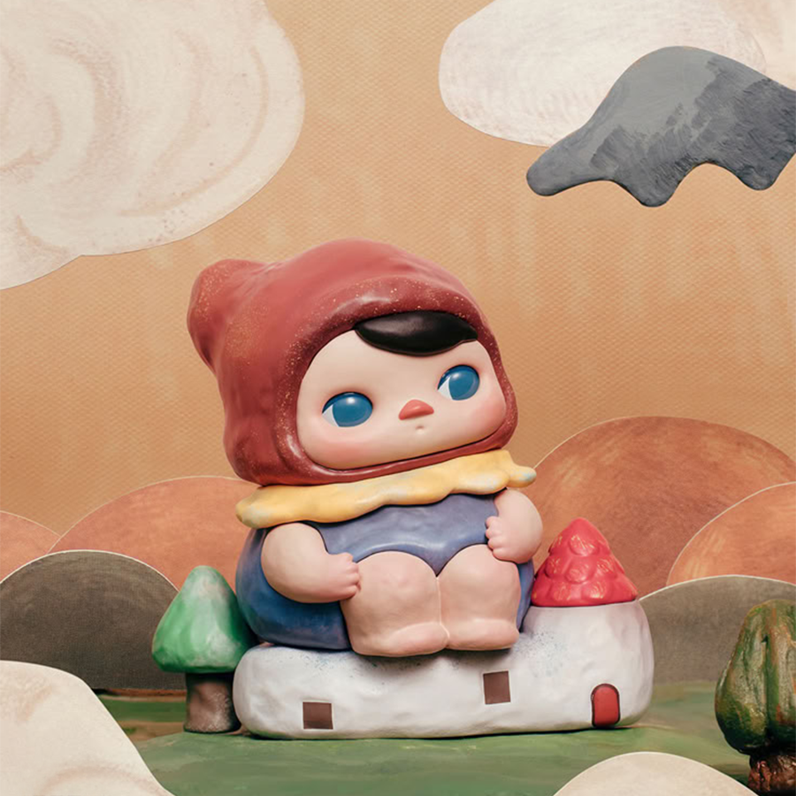
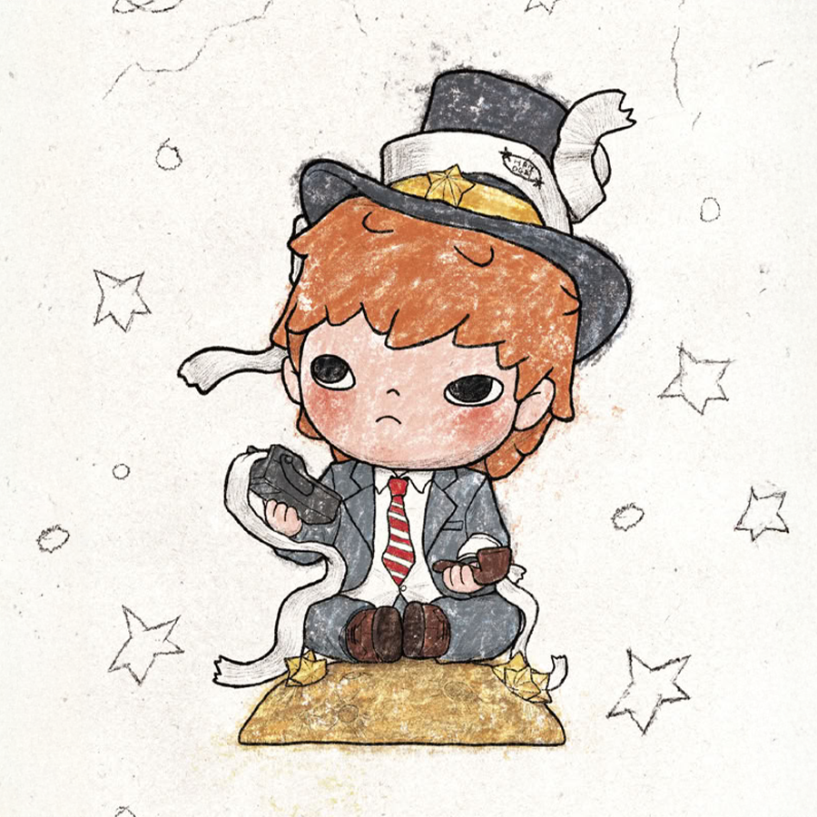

POP
PED!
☰
POPPED!
üîç
Not Added Yet :(
×
About
Home
Quiz
Generator
Collections
2nd Version

PUCKY
Nyota

HIRONO
CRYBABY
PINO JELLY
SKULLPANDA
Peach Riot
Sweet Bean
Chaka
DIMOO
KUBO
MOLLY
The Monsters (Labubu)
Azura
LuLu The Piggy
Azukisan
Wuhuang & Bazahey
Smiski
⬆ Back to Top ⬆
×
Details
Artist
Archive